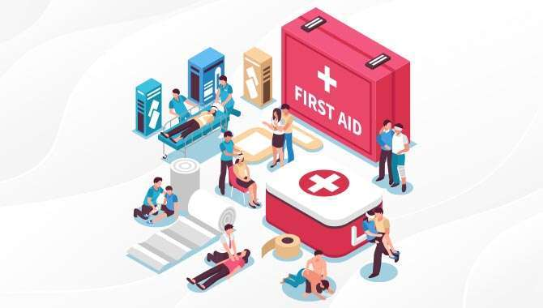

A comprehensive foundational program designed to train professionals in patient care protocols, clinical support tasks, nursing ethics, and diagnostic terminology. Students gain theoretical base along with mandatory internship rotations at Fortis or Max Healthcare.
A highly specialized clinical program designed to train professionals in managing operation theatre settings, sterilizing surgical instruments, ensuring patient safety, and assisting surgeons and anesthesia teams during procedures.

A technical program focused on operating state-of-the-art diagnostic machinery like X-Rays, CT scans, and MRI scanners. Candidates learn proper clinical safety guidelines and positioning protocols for diagnostics.

A clinical training curriculum preparing specialists to monitor heart health, set up and monitor ECG machines, evaluate vitals, track patient intake/output, and manage cardiac clinical workflows.

A core healthcare pathway training laboratory technicians in diagnostic testing. Students learn pathology procedures, hematology, microbiology sample cultures, biochemistry, and accurate reporting.

A specialized clinical pathway focusing on renal care. Students learn hemodialysis machine operations, dialysis safety checks, vascular access monitoring, hygiene, and patient care tracking.

A specialized healthcare track in physical rehabilitation and movement science. Training covers therapeutic exercises, patient muscle recovery, and hands-on clinical healing workflows.

A healthcare business administration course. Focuses on hospital reception desk operations, patient records management, OPD/IPD schedules, clinical billing, and healthcare quality assurance.

A specialized skilling curriculum delivering immediate structural employment. Covers elevator and escalator motor assembly, electrical control wiring panels, digital boards, safety inspections, and building structure alignment rules.
Job-oriented skill training batches designed to match national skill standards. Fosters professional independence and structural livelihood with corporate-aligned placements and practical skilling workshops.

A vital responder program training candidates to handle life-saving emergency medical situations. Strongly recommended and mandatory for offices, public environments, and corporate staff safety protocols.